Overview
This vignette fits the cholera transmission model to weekly case counts from Kirotshe health zone. The data are weekly IDSR counts, so the observation model is a count model rather than a model for per-capita rates.
The aim is to build up a stable pMCMC workflow for a deliberately small model. We fix the intervention dates and most natural-history parameters, set person-to-person transmission to zero, and estimate four quantities:
-
trans_prob: environmental transmission probability; -
reporting_rate: the fraction of symptomatic infections reported as cases; -
obs_size: the Negative Binomial overdispersion parameter; -
E0: the initial exposed population.
The workflow has two important features. First, we use deterministic-filter chains to learn the geometry of the posterior before running the particle filter. Second, we run several chains from dispersed starting points, because agreement between chains is one of the simplest checks that the fit is not just following its starting value.
Weekly observations
The model has both daily and weekly incidence accumulators. Daily
workflows use inc_symptoms; weekly workflows use
inc_symptoms_weekly. For weekly data the likelihood is
casest ∼ Negative Binomial{μt, obs_size}, μt = reporting_rate × inc_symptoms_weeklyt.
The first weekly observation is placed at time = 7, so
it is compared with incidence accumulated over days 0 to 7. This is why
chlaa_fit_pmcmc() starts weekly filters at day 0 when
observations are at 7, 14, ....
Kirotshe data
The package includes a small Kirotshe-only extract for this workflow.
It contains the weekly outbreak counts and the intervention
dates/effects needed for the fit; the larger analysis datasets remain
outside the package build. Population size comes from the weekly IDSR
extract and is passed to the process model as N.
repo_file <- function(...) {
candidates <- c(file.path(...), file.path("..", ...))
out <- candidates[file.exists(candidates)][1]
if (is.na(out)) stop("Could not find file: ", file.path(...), call. = FALSE)
out
}
repo_output_file <- function(...) {
roots <- c(".", "..")
root <- roots[file.exists(file.path(roots, "DESCRIPTION"))][1]
if (is.na(root)) stop("Could not find repository root", call. = FALSE)
file.path(root, ...)
}
extdata_file <- function(...) {
out <- system.file("extdata", ..., package = "chlaa")
if (nzchar(out)) return(out)
repo_file("inst", "extdata", ...)
}
hz_name <- "kirotshe"
kirotshe <- read_csv(extdata_file("kirotshe_weekly_cases.csv"), show_col_types = FALSE) |>
mutate(date = as.Date(date))
kirotshe_meta <- read_csv(
extdata_file("kirotshe_interventions.csv"),
col_types = cols(.default = col_character()),
na = c("NA", "")
)
outbreak_start <- as.Date(kirotshe_meta$outbreak_start)
outbreak_end <- as.Date(kirotshe_meta$outbreak_end)
kirotshe |>
select(date, time, cases, population, cases_pop) |>
head()
#> # A tibble: 6 × 5
#> date time cases population cases_pop
#> <date> <dbl> <dbl> <dbl> <dbl>
#> 1 2025-01-13 7 15 515741 0.0000291
#> 2 2025-01-20 14 5 515741 0.00000969
#> 3 2025-01-27 21 14 515741 0.0000271
#> 4 2025-02-03 28 8 515741 0.0000155
#> 5 2025-02-10 35 9 515741 0.0000175
#> 6 2025-02-17 42 25 515741 0.0000485The model time is a consecutive weekly index. If reporting weeks are missing in a formal analysis, decide before fitting whether those weeks should be padded or whether the observed time gaps should be preserved.
ggplot(kirotshe, aes(date, cases)) +
geom_col(width = 6, fill = "grey65") +
labs(
x = NULL,
y = "Weekly reported cases",
title = "Kirotshe IDSR outbreak window"
)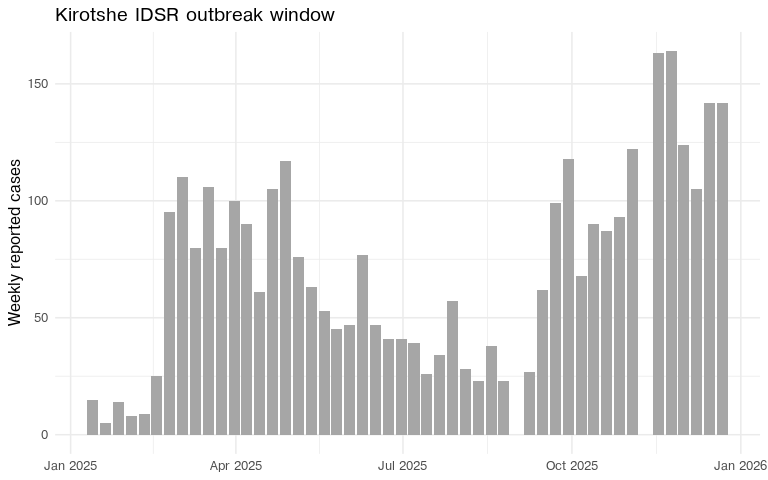
Interventions and fixed parameters
The parameter file stores intervention dates as calendar dates. The model uses day offsets relative to the outbreak start.
date_to_day <- function(x, origin) {
d <- as.Date(x)
if (length(d) == 0 || is.na(d)) 0L else as.integer(d - origin)
}
num_or <- function(x, default = 0) {
y <- suppressWarnings(as.numeric(x))
if (length(y) == 0 || is.na(y)) default else y
}
intervention_days <- list(
orc_start = date_to_day(kirotshe_meta$orc_start, outbreak_start),
orc_end = date_to_day(kirotshe_meta$orc_end, outbreak_start),
ctc_start = date_to_day(kirotshe_meta$ctc_start, outbreak_start),
ctc_end = date_to_day(kirotshe_meta$ctc_end, outbreak_start),
chlor_start = date_to_day(kirotshe_meta$chlor_start, outbreak_start),
chlor_end = date_to_day(kirotshe_meta$chlor_end, outbreak_start),
chlor_effect = num_or(kirotshe_meta$chlor_effect),
hyg_start = date_to_day(kirotshe_meta$hyg_start, outbreak_start),
hyg_end = date_to_day(kirotshe_meta$hyg_end, outbreak_start),
hyg_effect = num_or(kirotshe_meta$hyg_effect),
cati_start = date_to_day(kirotshe_meta$cati_start, outbreak_start),
cati_end = date_to_day(kirotshe_meta$cati_end, outbreak_start),
cati_effect = num_or(kirotshe_meta$cati_effect),
lat_start = date_to_day(kirotshe_meta$lat_start, outbreak_start),
lat_end = date_to_day(kirotshe_meta$lat_end, outbreak_start),
lat_effect = num_or(kirotshe_meta$lat_effect)
)
tibble(
quantity = names(intervention_days),
value = unlist(intervention_days)
)
#> # A tibble: 16 × 2
#> quantity value
#> <chr> <dbl>
#> 1 orc_start 70
#> 2 orc_end 224
#> 3 ctc_start 70
#> 4 ctc_end 238
#> 5 chlor_start 119
#> 6 chlor_end 238
#> 7 chlor_effect 0.2
#> 8 hyg_start 84
#> 9 hyg_end 224
#> 10 hyg_effect 0.2
#> 11 cati_start 133
#> 12 cati_end 245
#> 13 cati_effect 0.1
#> 14 lat_start 0
#> 15 lat_end 0
#> 16 lat_effect 0For this example we use one small parameter factory. Everything not listed in the function arguments is fixed across the fits.
make_kirotshe_pars <- function(trans_prob,
reporting_rate,
obs_size,
E0) {
do.call(
chlaa_parameters,
c(
list(
N = kirotshe$population[1],
contact_rate = 0,
trans_prob = trans_prob,
E0 = E0,
Sev0 = 0,
M0 = 0,
C0 = 0,
reporting_rate = reporting_rate,
obs_size = obs_size,
seek_severe = 0.4,
fatality_treated = 0.001,
fatality_untreated = 0.0043
),
intervention_days
)
)
}Simulated weekly data
We first make a synthetic dataset on the Kirotshe time grid. This gives us a known truth for checking whether the workflow can recover the parameters before we fit the real outbreak.
truth_pars <- make_kirotshe_pars(
trans_prob = 8.5e-4,
reporting_rate = 0.35,
obs_size = 120,
E0 = 80
)
truth <- chlaa_simulate(
pars = truth_pars,
time = kirotshe$time,
n_particles = 1,
seed = 1,
dt = 1,
deterministic = TRUE
)
set.seed(1)
synthetic_weekly <- kirotshe |>
transmute(
time,
date,
population,
inc_symptoms_truth = truth$inc_symptoms_weekly,
mu_cases = truth_pars$reporting_rate * inc_symptoms_truth,
cases = rnbinom(n(), mu = pmax(mu_cases, 0.01), size = truth_pars$obs_size)
)
natural_fit_names <- c("trans_prob", "reporting_rate", "obs_size", "E0")
truth_vec <- unlist(truth_pars[natural_fit_names])
truth_values <- tibble(parameter = names(truth_vec), truth = as.numeric(truth_vec))
truth_values
#> # A tibble: 4 × 2
#> parameter truth
#> <chr> <dbl>
#> 1 trans_prob 0.00085
#> 2 reporting_rate 0.35
#> 3 obs_size 120
#> 4 E0 80
ggplot() +
geom_col(data = synthetic_weekly, aes(date, cases), width = 6, fill = "grey70") +
geom_line(data = synthetic_weekly, aes(date, mu_cases), colour = "#238b45", linewidth = 0.8) +
labs(
x = NULL,
y = "Weekly reported cases",
title = "Synthetic weekly data",
subtitle = "Bars are noisy observations; the green line is the observation mean"
)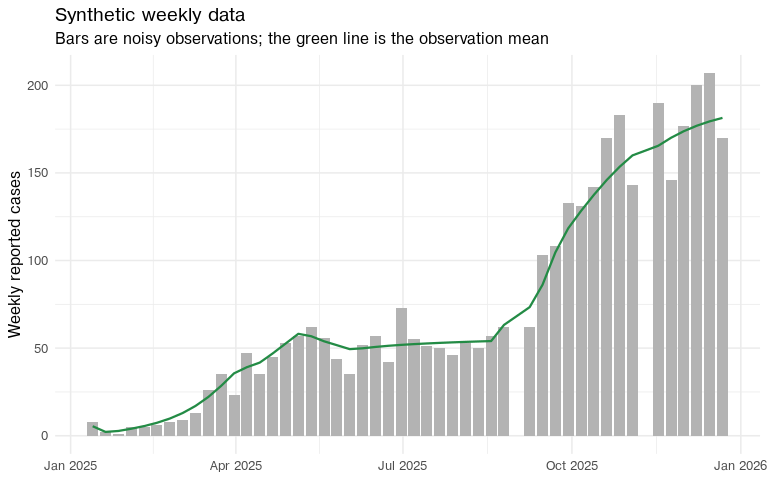
Diagnostic helpers
The next few helpers are used to summarise the chains. The code is
intentionally short: fitting itself is handled by
chlaa_fit_pmcmc(), including multiple chains through
n_chains and chain_pars.
n_chains <- 3L
pilot_steps <- 5000L
deterministic_steps <- 20000L
particle_steps <- 5000L
particle_count <- 50L
fit_data_synthetic <- synthetic_weekly |> select(time, cases)
fit_data_real <- kirotshe |> select(time, cases)Effective sample size, or ESS, translates an autocorrelated MCMC chain into the approximate number of independent samples it contains. A chain can save 3,750 post-burn-in draws and still have an ESS of 50 if it moves slowly. ESS is therefore a measure of information, not just storage.
draws_wide <- function(fit, burnin = 0.25, scale = c("sampled", "natural")) {
scale <- match.arg(scale)
chlaa_fit_trace(fit, burnin = burnin, scale = scale) |>
pivot_wider(names_from = parameter, values_from = value) |>
arrange(chain, iteration)
}
acceptance_summary <- function(fit, stage, burnin = 0.25) {
chlaa_fit_report(fit, burnin = burnin)$acceptance_by_chain |>
mutate(stage = stage, .before = 1)
}
ess_summary <- function(fit, stage, burnin = 0.25, parameters = NULL) {
dr <- draws_wide(fit, burnin = burnin, scale = "sampled")
if (is.null(parameters)) {
parameters <- setdiff(names(dr), c("chain", "iteration"))
}
dr |>
group_split(chain) |>
map_dfr(function(d) {
ess <- coda::effectiveSize(as.matrix(d[, parameters, drop = FALSE]))
tibble(chain = d$chain[[1]], parameter = names(ess), ess = as.numeric(ess))
}) |>
mutate(stage = stage, .before = 1)
}
rhat_summary <- function(fit, stage, burnin = 0.25, parameters = NULL) {
dr <- draws_wide(fit, burnin = burnin, scale = "sampled")
if (is.null(parameters)) {
parameters <- setdiff(names(dr), c("chain", "iteration"))
}
chains <- dr |>
group_split(chain) |>
map(\(d) coda::mcmc(as.matrix(d[, parameters, drop = FALSE])))
psrf <- coda::gelman.diag(
coda::mcmc.list(chains),
autoburnin = FALSE,
multivariate = FALSE
)$psrf
tibble(
stage = stage,
parameter = rownames(psrf),
rhat = psrf[, "Point est."],
rhat_upper = psrf[, "Upper C.I."]
)
}Posterior summaries are easier to read on the natural scale. For the synthetic example we can also record whether the true value lies in the central 95% posterior interval.
parameter_summary <- function(fit, stage, burnin = 0.25, truth = NULL) {
out <- draws_wide(fit, burnin = burnin, scale = "natural") |>
select(all_of(natural_fit_names)) |>
pivot_longer(everything(), names_to = "parameter", values_to = "value") |>
group_by(parameter) |>
summarise(
q025 = quantile(value, 0.025),
median = median(value),
q975 = quantile(value, 0.975),
.groups = "drop"
) |>
mutate(stage = stage, .before = 1)
if (!is.null(truth)) {
out <- out |>
left_join(tibble(parameter = names(truth), truth = as.numeric(truth)), by = "parameter") |>
mutate(covers_truth = q025 <= truth & truth <= q975)
}
out
}The proposal covariance learned from a pilot run must be positive
definite. The make_pd() helper symmetrises the covariance
matrix, floors very small or negative eigenvalues, and reconstructs a
valid covariance matrix. This prevents numerical failures when the
empirical covariance is nearly singular.
make_pd <- function(x, min_eig = 1e-10) {
x <- (x + t(x)) / 2
eig <- eigen(x, symmetric = TRUE)
eig$values <- pmax(eig$values, min_eig)
out <- eig$vectors %*% diag(eig$values, nrow = length(eig$values)) %*% t(eig$vectors)
dimnames(out) <- dimnames(x)
out
}
proposal_from_fit <- function(fit, burnin = 0.25, scale = 1) {
dr <- draws_wide(fit, burnin = burnin, scale = "sampled")
theta <- as.matrix(dr[, setdiff(names(dr), c("chain", "iteration")), drop = FALSE])
make_pd(cov(theta) * (2.38^2 / ncol(theta)) * scale)
}For particle pMCMC we start each chain from the median of the corresponding deterministic chain.
pars_from_theta <- function(theta, template_pars, packer) {
theta <- as.numeric(theta)
names(theta) <- packer[["names"]]()
unpacked <- packer[["unpack"]](theta)
fixed_names <- names(packer[["inputs"]]()$fixed)
update_names <- setdiff(names(unpacked), fixed_names)
out <- template_pars
for (nm in intersect(update_names, names(out))) {
out[[nm]] <- unpacked[[nm]]
}
out
}
chain_median_starts <- function(fit, template_pars, burnin = 0.25) {
dr <- draws_wide(fit, burnin = burnin, scale = "sampled")
packer <- attr(fit, "packer", exact = TRUE)
fit_names <- packer[["names"]]()
dr |>
group_split(chain) |>
map(function(d) {
theta <- vapply(fit_names, \(nm) median(d[[nm]]), numeric(1))
pars_from_theta(theta, template_pars, packer)
})
}The posterior predictive plots use posterior draws from all chains after burn-in.
plot_case_fit <- function(fit, observed, title, seed, burnin = 0.25) {
fc <- chlaa_forecast_from_fit(
fit = fit,
time = observed$time,
vars = "inc_symptoms_weekly",
include_cases = TRUE,
obs_model = "nbinom",
n_draws = 200,
burnin = burnin,
seed = seed,
dt = 1,
deterministic = FALSE
)
fit_cases <- fc |>
filter(variable == "cases") |>
left_join(observed |> select(time, date), by = "time")
ggplot() +
geom_ribbon(
data = fit_cases,
aes(date, ymin = q0p025, ymax = q0p975),
fill = "#6baed6",
alpha = 0.25
) +
geom_ribbon(
data = fit_cases,
aes(date, ymin = q0p25, ymax = q0p75),
fill = "#6baed6",
alpha = 0.45
) +
geom_line(data = fit_cases, aes(date, q0p5), colour = "#08519c", linewidth = 0.8) +
geom_point(data = observed, aes(date, cases), size = 1.6) +
labs(x = NULL, y = "Weekly reported cases", title = title)
}Natural-scale random walk
It is tempting to fit directly on the scale of the parameters. The starting values below are deliberately dispersed. The synthetic truth is included so the movement needed from each chain is visible.
make_raw_start <- function(trans_prob, reporting_rate, obs_size, E0) {
make_kirotshe_pars(
trans_prob = trans_prob,
reporting_rate = reporting_rate,
obs_size = obs_size,
E0 = E0
)
}
raw_starts <- list(
make_raw_start(trans_prob = 1.6e-3, reporting_rate = 0.12, obs_size = 20, E0 = 35),
make_raw_start(trans_prob = 4.0e-4, reporting_rate = 0.70, obs_size = 200, E0 = 200),
make_raw_start(trans_prob = 1.2e-3, reporting_rate = 0.25, obs_size = 45, E0 = 120)
)
bind_rows(
tibble(row = "truth", parameter = names(truth_vec), value = as.numeric(truth_vec)),
imap_dfr(raw_starts, \(pars, chain) tibble(
row = paste0("chain_", chain),
parameter = natural_fit_names,
value = unlist(pars[natural_fit_names])
))
) |>
pivot_wider(names_from = parameter, values_from = value)
#> # A tibble: 4 × 5
#> row trans_prob reporting_rate obs_size E0
#> <chr> <dbl> <dbl> <dbl> <dbl>
#> 1 truth 0.00085 0.35 120 80
#> 2 chain_1 0.0016 0.12 20 35
#> 3 chain_2 0.0004 0.7 200 200
#> 4 chain_3 0.0012 0.25 45 120The raw-scale prior and packer estimate the same four model parameters directly. This short deterministic run is not used for the final fit. It is a diagnostic contrast.
raw_prior <- monty::monty_dsl({
trans_prob ~ Uniform(1e-4, 1e-2)
reporting_rate ~ Uniform(0.05, 0.8)
obs_size ~ Uniform(1, 300)
E0 ~ Uniform(5, 2000)
}, gradient = FALSE)
raw_packer <- function(pars) {
fixed <- pars[setdiff(names(pars), natural_fit_names)]
monty::monty_packer(scalar = natural_fit_names, fixed = fixed)
}
raw_proposal <- c(
trans_prob = 1e-8,
reporting_rate = 2e-4,
obs_size = 9,
E0 = 400
)
raw_fit <- chlaa_fit_pmcmc(
data = fit_data_synthetic,
pars = raw_starts[[1]],
chain_pars = raw_starts,
n_chains = n_chains,
n_particles = 1,
n_steps = pilot_steps,
seed = 91,
prior = raw_prior,
packer = raw_packer(raw_starts[[1]]),
proposal_var = raw_proposal,
obs_interval = 7,
time_start = 0,
deterministic = TRUE
)The raw-scale chains move, but they do not explore the posterior geometry very efficiently. Parameters with small positive values, probabilities bounded by zero and one, and large count-like parameters all need proposal variances on very different scales.
acceptance_summary(raw_fit, "raw deterministic", burnin = 0.25)
#> # A tibble: 3 × 4
#> stage chain acceptance_rate n_iterations
#> <chr> <chr> <dbl> <int>
#> 1 raw deterministic chain_1 0.0563 3750
#> 2 raw deterministic chain_2 0.0373 3750
#> 3 raw deterministic chain_3 0.0496 3750
ess_summary(raw_fit, "raw deterministic", burnin = 0.25)
#> # A tibble: 12 × 4
#> stage chain parameter ess
#> <chr> <chr> <chr> <dbl>
#> 1 raw deterministic chain_1 trans_prob 15.7
#> 2 raw deterministic chain_1 reporting_rate 10.9
#> 3 raw deterministic chain_1 obs_size 4.51
#> 4 raw deterministic chain_1 E0 113.
#> 5 raw deterministic chain_2 trans_prob 8.63
#> 6 raw deterministic chain_2 reporting_rate 3.52
#> 7 raw deterministic chain_2 obs_size 2.31
#> 8 raw deterministic chain_2 E0 107.
#> 9 raw deterministic chain_3 trans_prob 23.5
#> 10 raw deterministic chain_3 reporting_rate 7.34
#> 11 raw deterministic chain_3 obs_size 4.86
#> 12 raw deterministic chain_3 E0 129.
rhat_summary(raw_fit, "raw deterministic", burnin = 0.25)
#> # A tibble: 4 × 4
#> stage parameter rhat rhat_upper
#> <chr> <chr> <dbl> <dbl>
#> 1 raw deterministic trans_prob 1.21 1.62
#> 2 raw deterministic reporting_rate 1.24 1.69
#> 3 raw deterministic obs_size 10.4 20.2
#> 4 raw deterministic E0 1.03 1.06
chlaa_plot_trace(
raw_fit,
parameters = natural_fit_names,
burnin = 0.25,
scale = "natural"
)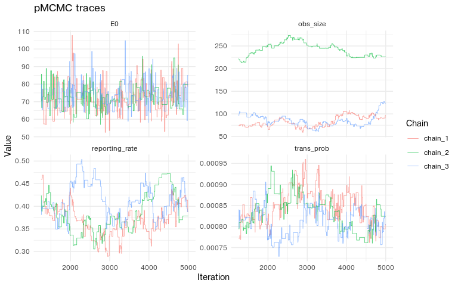
chlaa_plot_parameter_pairs(
raw_fit,
parameters = natural_fit_names,
burnin = 0.25,
scale = "natural",
truth = truth_vec,
max_points = 2500
)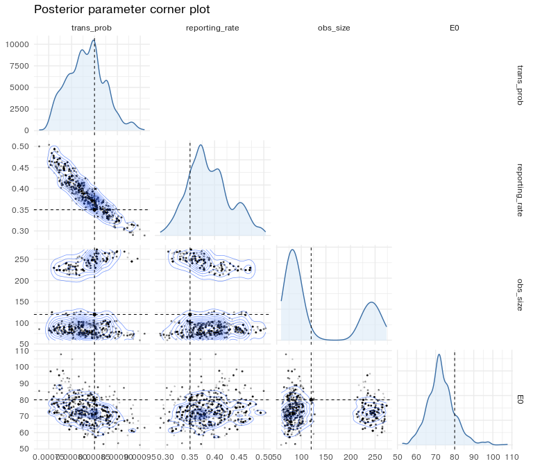
Transformed parameterisation
The final workflow samples transformed coordinates:
-
log_trans_probfor a positive transmission probability; -
logit_reporting_ratefor a probability bounded by zero and one; -
log_obs_sizefor a positive overdispersion parameter; -
log_E0for a positive initial condition.
The sampler moves on this transformed scale, but the plots below use the natural scale by default.
fit_names <- c(
"log_trans_prob",
"logit_reporting_rate",
"log_obs_size",
"log_E0"
)
fit_prior <- monty::monty_dsl({
log_trans_prob ~ Uniform(-9.210340, -4.605170) # log(c(1e-4, 1e-2))
logit_reporting_rate ~ Uniform(-2.944439, 1.386294) # qlogis(c(0.05, 0.8))
log_obs_size ~ Uniform(0, 5.703782) # log(c(1, 300))
log_E0 ~ Uniform(1.609438, 7.600902) # log(c(5, 2000))
}, gradient = FALSE)
add_transformed_values <- function(pars) {
pars$log_trans_prob <- log(pars$trans_prob)
pars$logit_reporting_rate <- qlogis(pars$reporting_rate)
pars$log_obs_size <- log(pars$obs_size)
pars$log_E0 <- log(pars$E0)
pars
}
make_packer <- function(pars) {
fixed <- pars[setdiff(names(pars), c(fit_names, natural_fit_names))]
monty::monty_packer(
scalar = fit_names,
fixed = fixed,
process = function(p) {
list(
trans_prob = exp(p$log_trans_prob),
reporting_rate = plogis(p$logit_reporting_rate),
obs_size = exp(p$log_obs_size),
E0 = exp(p$log_E0)
)
}
)
}
make_start <- function(trans_prob, reporting_rate, obs_size, E0) {
make_kirotshe_pars(
trans_prob = trans_prob,
reporting_rate = reporting_rate,
obs_size = obs_size,
E0 = E0
) |>
add_transformed_values()
}
synthetic_starts <- list(
make_start(trans_prob = 1.6e-3, reporting_rate = 0.12, obs_size = 20, E0 = 35),
make_start(trans_prob = 4.0e-4, reporting_rate = 0.70, obs_size = 200, E0 = 200),
make_start(trans_prob = 1.2e-3, reporting_rate = 0.25, obs_size = 45, E0 = 120)
)Synthetic fit
The transformed workflow begins with a deterministic pilot. The proposal is diagonal and deliberately simple; it only needs to move enough for us to learn the covariance structure.
pilot_proposal <- c(
log_trans_prob = 0.02,
logit_reporting_rate = 0.05,
log_obs_size = 0.08,
log_E0 = 0.08
)
synthetic_pilot <- chlaa_fit_pmcmc(
data = fit_data_synthetic,
pars = synthetic_starts[[1]],
chain_pars = synthetic_starts,
n_chains = n_chains,
n_particles = 1,
n_steps = pilot_steps,
seed = 101,
prior = fit_prior,
packer = make_packer(synthetic_starts[[1]]),
proposal_var = pilot_proposal,
obs_interval = 7,
time_start = 0,
deterministic = TRUE
)The pilot acceptance rates should not be interpreted as final diagnostics. They tell us whether the simple proposal was able to move enough to estimate a useful covariance.
acceptance_summary(synthetic_pilot, "synthetic pilot")
#> # A tibble: 3 × 4
#> stage chain acceptance_rate n_iterations
#> <chr> <chr> <dbl> <int>
#> 1 synthetic pilot chain_1 0.0347 3750
#> 2 synthetic pilot chain_2 0.0237 3750
#> 3 synthetic pilot chain_3 0.0320 3750The learned covariance is full rather than diagonal. Off-diagonal
correlations are useful here because trans_prob,
reporting_rate, and E0 can compensate for one
another.
synthetic_det_proposal <- proposal_from_fit(
synthetic_pilot,
burnin = 0.25,
scale = 1
)
round(cov2cor(synthetic_det_proposal), 2)
#> log_trans_prob logit_reporting_rate log_obs_size log_E0
#> log_trans_prob 1.00 -0.95 0.06 -0.47
#> logit_reporting_rate -0.95 1.00 -0.05 0.27
#> log_obs_size 0.06 -0.05 1.00 -0.02
#> log_E0 -0.47 0.27 -0.02 1.00With the learned covariance, the deterministic chains can be run longer. The main visual check is that chains from different starts overlap after burn-in.
synthetic_det <- chlaa_fit_pmcmc(
data = fit_data_synthetic,
pars = synthetic_starts[[1]],
chain_pars = synthetic_starts,
n_chains = n_chains,
n_particles = 1,
n_steps = deterministic_steps,
seed = 201,
prior = fit_prior,
packer = make_packer(synthetic_starts[[1]]),
proposal_var = synthetic_det_proposal,
obs_interval = 7,
time_start = 0,
deterministic = TRUE
)
acceptance_summary(synthetic_det, "synthetic deterministic")
#> # A tibble: 3 × 4
#> stage chain acceptance_rate n_iterations
#> <chr> <chr> <dbl> <int>
#> 1 synthetic deterministic chain_1 0.326 15000
#> 2 synthetic deterministic chain_2 0.327 15000
#> 3 synthetic deterministic chain_3 0.329 15000
ess_summary(synthetic_det, "synthetic deterministic")
#> # A tibble: 12 × 4
#> stage chain parameter ess
#> <chr> <chr> <chr> <dbl>
#> 1 synthetic deterministic chain_1 log_trans_prob 1143.
#> 2 synthetic deterministic chain_1 logit_reporting_rate 1128.
#> 3 synthetic deterministic chain_1 log_obs_size 902.
#> 4 synthetic deterministic chain_1 log_E0 1124.
#> 5 synthetic deterministic chain_2 log_trans_prob 1129.
#> 6 synthetic deterministic chain_2 logit_reporting_rate 1055.
#> 7 synthetic deterministic chain_2 log_obs_size 963.
#> 8 synthetic deterministic chain_2 log_E0 1102.
#> 9 synthetic deterministic chain_3 log_trans_prob 1120.
#> 10 synthetic deterministic chain_3 logit_reporting_rate 1052.
#> 11 synthetic deterministic chain_3 log_obs_size 990.
#> 12 synthetic deterministic chain_3 log_E0 1329.
rhat_summary(synthetic_det, "synthetic deterministic")
#> # A tibble: 4 × 4
#> stage parameter rhat rhat_upper
#> <chr> <chr> <dbl> <dbl>
#> 1 synthetic deterministic log_trans_prob 1.00 1.00
#> 2 synthetic deterministic logit_reporting_rate 1.00 1.00
#> 3 synthetic deterministic log_obs_size 1.00 1.00
#> 4 synthetic deterministic log_E0 1.00 1.00
parameter_summary(
synthetic_det,
"synthetic deterministic",
truth = truth_vec
)
#> # A tibble: 4 × 7
#> stage parameter q025 median q975 truth covers_truth
#> <chr> <chr> <dbl> <dbl> <dbl> <dbl> <lgl>
#> 1 synthetic deterministic E0 5.86e+1 7.18e+1 8.69e+1 8 e+1 TRUE
#> 2 synthetic deterministic obs_size 5.66e+1 1.53e+2 2.86e+2 1.2e+2 TRUE
#> 3 synthetic deterministic reporting… 3.08e-1 3.76e-1 4.63e-1 3.5e-1 TRUE
#> 4 synthetic deterministic trans_prob 7.64e-4 8.40e-4 9.29e-4 8.5e-4 TRUE
chlaa_plot_trace(
synthetic_det,
parameters = natural_fit_names,
burnin = 0.25,
scale = "natural"
)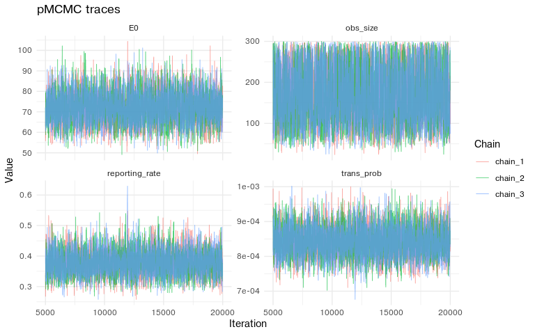
The deterministic fit is also useful for diagnosing posterior geometry. The dashed lines mark the synthetic truth.
chlaa_plot_parameter_distributions(
synthetic_det,
parameters = natural_fit_names,
burnin = 0.25,
scale = "natural",
truth = truth_vec
)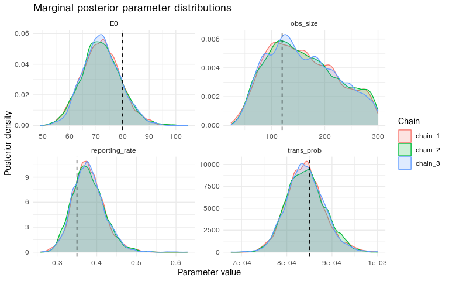
chlaa_plot_parameter_pairs(
synthetic_det,
parameters = natural_fit_names,
burnin = 0.25,
scale = "natural",
truth = truth_vec,
max_points = 3000
)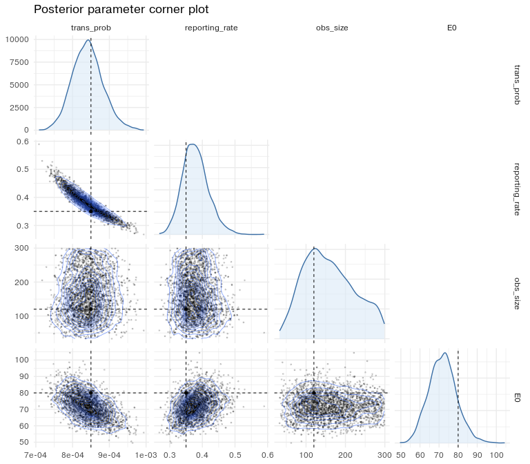
Synthetic particle pMCMC
The particle-filter run uses the deterministic posterior medians as starting points. We keep the covariance direction learned by the deterministic fit and shrink the scale because the particle likelihood is noisy.
synthetic_particle_starts <- chain_median_starts(
synthetic_det,
template_pars = synthetic_starts[[1]],
burnin = 0.25
)
synthetic_particle_proposal <- proposal_from_fit(
synthetic_det,
burnin = 0.25,
scale = 0.8
)
synthetic_particle <- chlaa_fit_pmcmc(
data = fit_data_synthetic,
pars = synthetic_particle_starts[[1]],
chain_pars = synthetic_particle_starts,
n_chains = n_chains,
n_particles = particle_count,
n_steps = particle_steps,
seed = 301,
prior = fit_prior,
packer = make_packer(synthetic_particle_starts[[1]]),
proposal_var = synthetic_particle_proposal,
obs_interval = 7,
time_start = 0,
deterministic = FALSE
)For the particle chains, acceptance is typically lower than the deterministic pilot because each likelihood evaluation is noisy.
acceptance_summary(synthetic_particle, "synthetic particle")
#> # A tibble: 3 × 4
#> stage chain acceptance_rate n_iterations
#> <chr> <chr> <dbl> <int>
#> 1 synthetic particle chain_1 0.432 3750
#> 2 synthetic particle chain_2 0.445 3750
#> 3 synthetic particle chain_3 0.428 3750ESS and R-hat are complementary. ESS asks how many independent samples the autocorrelated chain is worth; R-hat asks whether the different chains agree.
ess_summary(synthetic_particle, "synthetic particle")
#> # A tibble: 12 × 4
#> stage chain parameter ess
#> <chr> <chr> <chr> <dbl>
#> 1 synthetic particle chain_1 log_trans_prob 238.
#> 2 synthetic particle chain_1 logit_reporting_rate 288.
#> 3 synthetic particle chain_1 log_obs_size 341.
#> 4 synthetic particle chain_1 log_E0 58.5
#> 5 synthetic particle chain_2 log_trans_prob 187.
#> 6 synthetic particle chain_2 logit_reporting_rate 222.
#> 7 synthetic particle chain_2 log_obs_size 284.
#> 8 synthetic particle chain_2 log_E0 43.1
#> 9 synthetic particle chain_3 log_trans_prob 223.
#> 10 synthetic particle chain_3 logit_reporting_rate 256.
#> 11 synthetic particle chain_3 log_obs_size 331.
#> 12 synthetic particle chain_3 log_E0 38.4
rhat_summary(synthetic_particle, "synthetic particle")
#> # A tibble: 4 × 4
#> stage parameter rhat rhat_upper
#> <chr> <chr> <dbl> <dbl>
#> 1 synthetic particle log_trans_prob 1.00 1.00
#> 2 synthetic particle logit_reporting_rate 1.00 1.00
#> 3 synthetic particle log_obs_size 1.00 1.00
#> 4 synthetic particle log_E0 1.04 1.13The synthetic parameters are recovered if the posterior intervals cover the true values and the posterior mass is concentrated near them.
parameter_summary(
synthetic_particle,
"synthetic particle",
truth = truth_vec
)
#> # A tibble: 4 × 7
#> stage parameter q025 median q975 truth covers_truth
#> <chr> <chr> <dbl> <dbl> <dbl> <dbl> <lgl>
#> 1 synthetic particle E0 4.56e+1 8.48e+1 1.37e+2 8 e+1 TRUE
#> 2 synthetic particle obs_size 6.42e+1 1.81e+2 2.92e+2 1.2e+2 TRUE
#> 3 synthetic particle reporting_rate 2.90e-1 3.63e-1 4.67e-1 3.5e-1 TRUE
#> 4 synthetic particle trans_prob 7.53e-4 8.58e-4 9.70e-4 8.5e-4 TRUE
chlaa_plot_trace(
synthetic_particle,
parameters = natural_fit_names,
burnin = 0.25,
scale = "natural"
)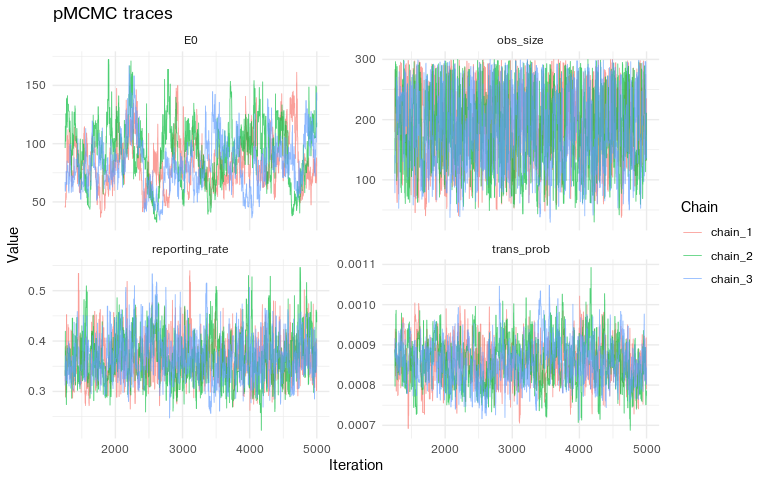
chlaa_plot_parameter_distributions(
synthetic_particle,
parameters = natural_fit_names,
burnin = 0.25,
scale = "natural",
truth = truth_vec
)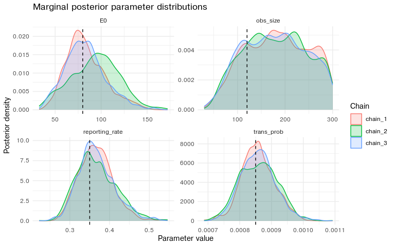
chlaa_plot_parameter_pairs(
synthetic_particle,
parameters = natural_fit_names,
burnin = 0.25,
scale = "natural",
truth = truth_vec,
max_points = 3000
)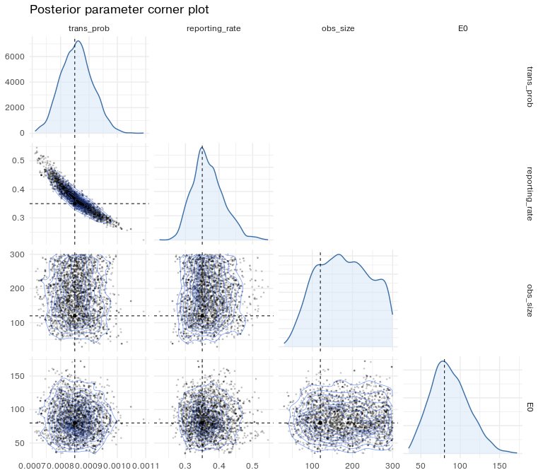
Finally, the posterior predictive check asks whether the fitted model can regenerate data like the observed weekly counts.
plot_case_fit(
synthetic_particle,
synthetic_weekly,
"Posterior predictive fit to synthetic weekly cases",
seed = 401
)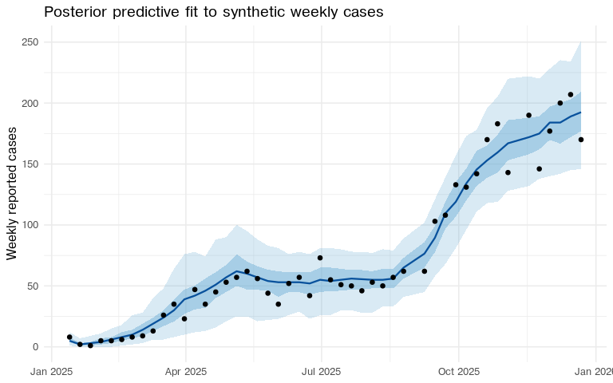
Real Kirotshe fit
The real-data fit follows the same deterministic-to-particle sequence. There is no known truth, so the emphasis shifts to chain agreement, predictive fit, and whether the inferred parameter values are epidemiologically plausible.
real_starts <- list(
make_start(trans_prob = 2.0e-3, reporting_rate = 0.12, obs_size = 5, E0 = 600),
make_start(trans_prob = 6.0e-4, reporting_rate = 0.60, obs_size = 50, E0 = 1000),
make_start(trans_prob = 3.0e-3, reporting_rate = 0.20, obs_size = 10, E0 = 300)
)
imap_dfr(real_starts, \(pars, chain) tibble(
chain = paste0("chain_", chain),
parameter = natural_fit_names,
value = unlist(pars[natural_fit_names])
)) |>
pivot_wider(names_from = parameter, values_from = value)
#> # A tibble: 3 × 5
#> chain trans_prob reporting_rate obs_size E0
#> <chr> <dbl> <dbl> <dbl> <dbl>
#> 1 chain_1 0.002 0.12 5 600
#> 2 chain_2 0.0006 0.6 50 1000
#> 3 chain_3 0.003 0.2 10 300Deterministic fit
The real-data pilot again learns a proposal covariance with the deterministic filter. This keeps the expensive particle-filter stage focused on a proposal that already knows the posterior ridge.
real_pilot <- chlaa_fit_pmcmc(
data = fit_data_real,
pars = real_starts[[1]],
chain_pars = real_starts,
n_chains = n_chains,
n_particles = 1,
n_steps = pilot_steps,
seed = 501,
prior = fit_prior,
packer = make_packer(real_starts[[1]]),
proposal_var = pilot_proposal,
obs_interval = 7,
time_start = 0,
deterministic = TRUE
)
acceptance_summary(real_pilot, "real pilot")
#> # A tibble: 3 × 4
#> stage chain acceptance_rate n_iterations
#> <chr> <chr> <dbl> <int>
#> 1 real pilot chain_1 0.128 3750
#> 2 real pilot chain_2 0.138 3750
#> 3 real pilot chain_3 0.134 3750
real_det_proposal <- proposal_from_fit(
real_pilot,
burnin = 0.25,
scale = 1
)
round(cov2cor(real_det_proposal), 2)
#> log_trans_prob logit_reporting_rate log_obs_size log_E0
#> log_trans_prob 1.00 -0.97 0.09 -0.20
#> logit_reporting_rate -0.97 1.00 -0.11 0.11
#> log_obs_size 0.09 -0.11 1.00 -0.04
#> log_E0 -0.20 0.11 -0.04 1.00
real_det <- chlaa_fit_pmcmc(
data = fit_data_real,
pars = real_starts[[1]],
chain_pars = real_starts,
n_chains = n_chains,
n_particles = 1,
n_steps = deterministic_steps,
seed = 601,
prior = fit_prior,
packer = make_packer(real_starts[[1]]),
proposal_var = real_det_proposal,
obs_interval = 7,
time_start = 0,
deterministic = TRUE
)
acceptance_summary(real_det, "real deterministic")
#> # A tibble: 3 × 4
#> stage chain acceptance_rate n_iterations
#> <chr> <chr> <dbl> <int>
#> 1 real deterministic chain_1 0.252 15000
#> 2 real deterministic chain_2 0.254 15000
#> 3 real deterministic chain_3 0.250 15000
ess_summary(real_det, "real deterministic")
#> # A tibble: 12 × 4
#> stage chain parameter ess
#> <chr> <chr> <chr> <dbl>
#> 1 real deterministic chain_1 log_trans_prob 894.
#> 2 real deterministic chain_1 logit_reporting_rate 838.
#> 3 real deterministic chain_1 log_obs_size 1135.
#> 4 real deterministic chain_1 log_E0 944.
#> 5 real deterministic chain_2 log_trans_prob 971.
#> 6 real deterministic chain_2 logit_reporting_rate 926.
#> 7 real deterministic chain_2 log_obs_size 915.
#> 8 real deterministic chain_2 log_E0 961.
#> 9 real deterministic chain_3 log_trans_prob 1041.
#> 10 real deterministic chain_3 logit_reporting_rate 1060.
#> 11 real deterministic chain_3 log_obs_size 1019.
#> 12 real deterministic chain_3 log_E0 951.
rhat_summary(real_det, "real deterministic")
#> # A tibble: 4 × 4
#> stage parameter rhat rhat_upper
#> <chr> <chr> <dbl> <dbl>
#> 1 real deterministic log_trans_prob 1.00 1.00
#> 2 real deterministic logit_reporting_rate 1.00 1.00
#> 3 real deterministic log_obs_size 1.00 1.01
#> 4 real deterministic log_E0 1.00 1.00
parameter_summary(real_det, "real deterministic")
#> # A tibble: 4 × 5
#> stage parameter q025 median q975
#> <chr> <chr> <dbl> <dbl> <dbl>
#> 1 real deterministic E0 460. 691. 1049.
#> 2 real deterministic obs_size 5.06 8.24 13.4
#> 3 real deterministic reporting_rate 0.0614 0.0967 0.179
#> 4 real deterministic trans_prob 0.00102 0.00165 0.00252
chlaa_plot_trace(
real_det,
parameters = natural_fit_names,
burnin = 0.25,
scale = "natural"
)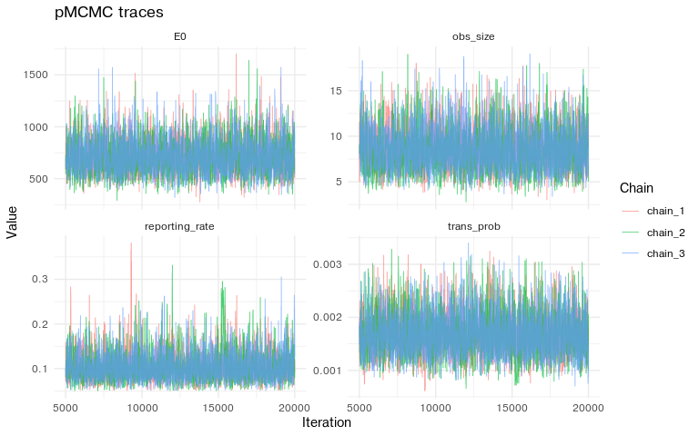
chlaa_plot_parameter_pairs(
real_det,
parameters = natural_fit_names,
burnin = 0.25,
scale = "natural",
max_points = 3000
)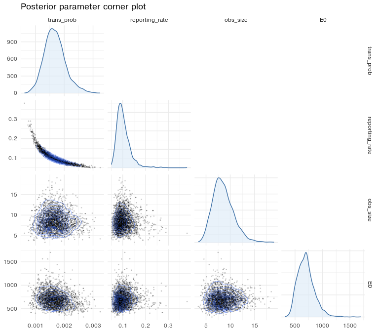
Particle pMCMC
The real particle chains use 50 particles. The proposal is shrunk
more than in the synthetic example because the real likelihood is
noisier and the posterior is tighter around a low
obs_size.
real_particle_starts <- chain_median_starts(
real_det,
template_pars = real_starts[[1]],
burnin = 0.25
)
real_particle_proposal <- proposal_from_fit(
real_det,
burnin = 0.25,
scale = 0.2
)
real_particle <- chlaa_fit_pmcmc(
data = fit_data_real,
pars = real_particle_starts[[1]],
chain_pars = real_particle_starts,
n_chains = n_chains,
n_particles = particle_count,
n_steps = particle_steps,
seed = 701,
prior = fit_prior,
packer = make_packer(real_particle_starts[[1]]),
proposal_var = real_particle_proposal,
obs_interval = 7,
time_start = 0,
deterministic = FALSE
)
acceptance_summary(real_particle, "real particle")
#> # A tibble: 3 × 4
#> stage chain acceptance_rate n_iterations
#> <chr> <chr> <dbl> <int>
#> 1 real particle chain_1 0.582 3750
#> 2 real particle chain_2 0.598 3750
#> 3 real particle chain_3 0.587 3750
ess_summary(real_particle, "real particle")
#> # A tibble: 12 × 4
#> stage chain parameter ess
#> <chr> <chr> <chr> <dbl>
#> 1 real particle chain_1 log_trans_prob 169.
#> 2 real particle chain_1 logit_reporting_rate 170.
#> 3 real particle chain_1 log_obs_size 128.
#> 4 real particle chain_1 log_E0 124.
#> 5 real particle chain_2 log_trans_prob 113.
#> 6 real particle chain_2 logit_reporting_rate 112.
#> 7 real particle chain_2 log_obs_size 155.
#> 8 real particle chain_2 log_E0 118.
#> 9 real particle chain_3 log_trans_prob 130.
#> 10 real particle chain_3 logit_reporting_rate 126.
#> 11 real particle chain_3 log_obs_size 136.
#> 12 real particle chain_3 log_E0 115.
rhat_summary(real_particle, "real particle")
#> # A tibble: 4 × 4
#> stage parameter rhat rhat_upper
#> <chr> <chr> <dbl> <dbl>
#> 1 real particle log_trans_prob 1.02 1.04
#> 2 real particle logit_reporting_rate 1.01 1.03
#> 3 real particle log_obs_size 1.00 1.00
#> 4 real particle log_E0 1.00 1.01
parameter_summary(real_particle, "real particle")
#> # A tibble: 4 × 5
#> stage parameter q025 median q975
#> <chr> <chr> <dbl> <dbl> <dbl>
#> 1 real particle E0 435. 677. 1082.
#> 2 real particle obs_size 5.15 8.50 13.4
#> 3 real particle reporting_rate 0.0618 0.0977 0.190
#> 4 real particle trans_prob 0.000988 0.00163 0.00249
chlaa_plot_trace(
real_particle,
parameters = natural_fit_names,
burnin = 0.25,
scale = "natural"
)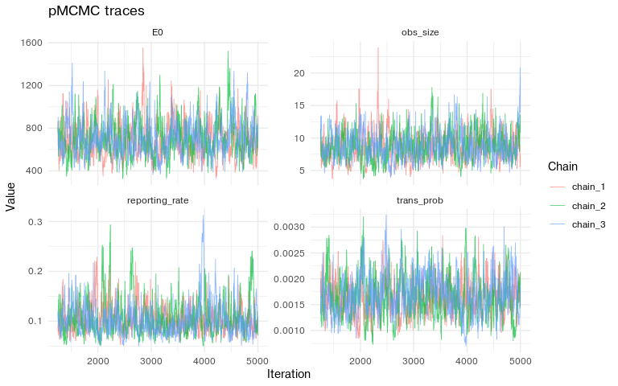
chlaa_plot_parameter_distributions(
real_particle,
parameters = natural_fit_names,
burnin = 0.25,
scale = "natural"
)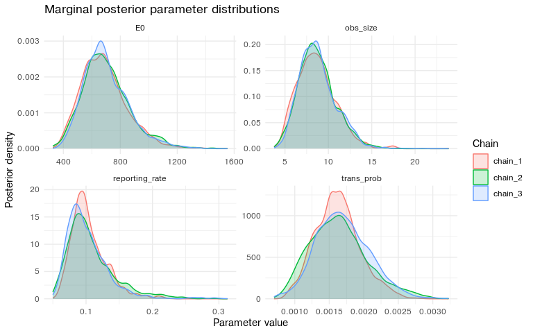
chlaa_plot_parameter_pairs(
real_particle,
parameters = natural_fit_names,
burnin = 0.25,
scale = "natural",
max_points = 3000
)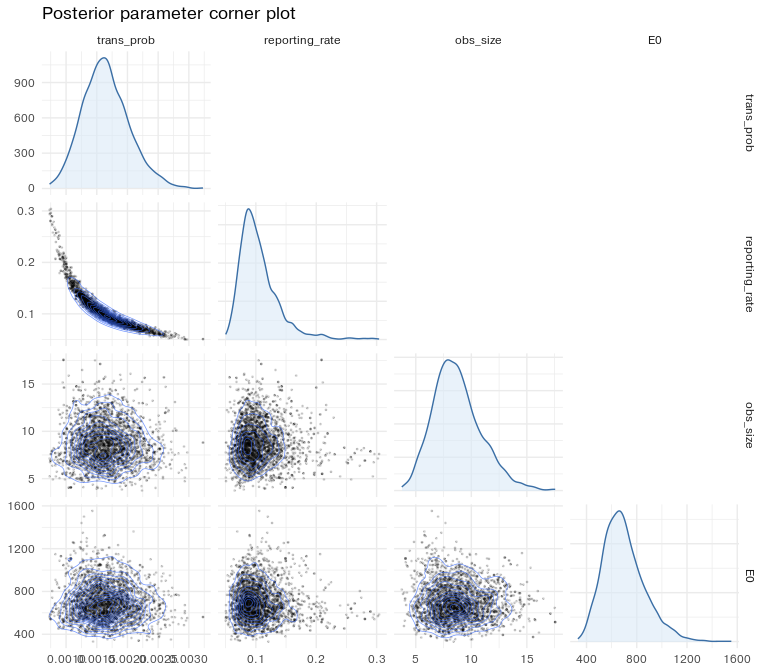
The posterior predictive fit captures the broad two-wave structure. If the highest late observations remain systematically above the median, that is a model signal: the next model comparison should consider additional seeding, initial-condition structure, or limited person-to-person transmission.
plot_case_fit(
real_particle,
kirotshe,
"Posterior predictive fit to Kirotshe weekly cases",
seed = 801
)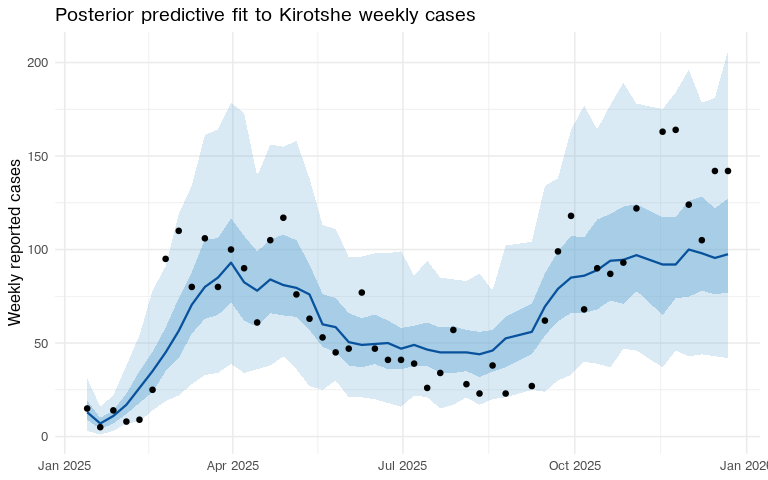
The fitted stochastic pMCMC object is saved as package example data. The scenario and health-economics vignettes read this object, so they can start from the fitted Kirotshe posterior rather than refitting the particle filter.
fit_artifact <- list(
fit = real_particle,
pars = attr(real_particle, "start_pars", exact = TRUE),
observed = kirotshe,
interventions = kirotshe_meta,
outbreak_start = outbreak_start,
outbreak_end = outbreak_end,
burnin = 0.25,
particle_count = particle_count
)
artifact_path <- repo_output_file("inst", "extdata", "kirotshe_particle_fit.rds")
saveRDS(fit_artifact, artifact_path)
artifact_path
#> [1] "../inst/extdata/kirotshe_particle_fit.rds"Reading the diagnostics
The synthetic fit is the calibration check: the known truth should sit inside the posterior intervals and near the high-density region of the marginal and joint posterior plots. The real fit then asks a different question: whether the small fitted model is stable enough to use as a baseline for scenario analysis.
The diagnostic tables and plots should be read together. Trace plots show movement and chain overlap. ESS shows how much independent information the saved draws contain. R-hat shows whether chains started from different points have settled into the same distribution. Posterior predictive plots show whether parameter uncertainty and observation noise generate outbreak curves like the observed data.